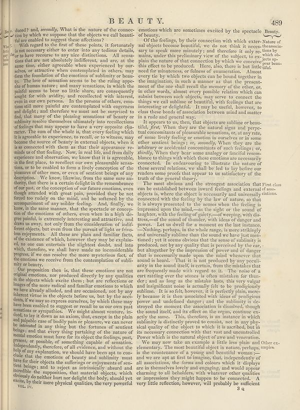

Source · scan and Parse blocks
Layers 3

Parse text by block reading order
- 0Page-headerBEAUTY. 489
- 1Textduced? and, _Secondly_. What is the nature of the connexion by which we suppose that the objects are call beautifully or enabled to suggest these affections? A With regard to the first of these points, it fortunately is not necessary either or enter into no feeling details, or to have resources to any one distinct dimensions. All scenarios that are not absolutely indifferent, and are, at the same time, either agreeable when experienced by our advice, or attractive when accompanied in others, may form the foundation of the emotions of sublinity or beauty. The love of sensation seems to be the ruling apple of of these matters; and many sensations, in which the painful seems to bear no little shawy, are consequently sought for with stability, and recollected with interest, even in our own persons. In the person of others, emotions shall move painful as contemplated with engress and slight, and therefore we must not be surprised to find, that many of the pleasing sensations of beauty or sublimly resolve themselves ultimately into recollections of feelings that may appear to have a very opposite character. The sum of the whole is, that every feeling which it is agreeable to experience, toresult, or to virtues, may become the source of beauty in external objects, when it is so connected with them as that: their appearance reminds us of that feedback. Now, to real life and from daily experiences and observation, we know that it is agreeable, in this fact place, to rereadher our own pleasant seasians, or to be enabled to form a lively conception of the pleasures of other men, or even of senient beings of any description. We knew, likewise, from the same sure authority, that there is a certain delight to the remembrance of our past; or the conception of our future emotions, even though intended with great pain, provided they have forced too today on the mind, and the softened by the accompaniment of any milder feeling. And, finally, we know, in the same manner, that the spectacle or conception of the emotions of others, even when in a high degree painful, is extremely interesting and attractive, and draws in away. It can only from the consideration if indirfer friends, but even from the pursuit of light or invo-less enjoyments. All these are plain and familiar facts, of the balance of which, however they may be explained, no one can entertain the slightest doubt, and into which, therefore, we shall have made no inconsideration progress. If we can recieve the more mysterious fear, of the emotion we receive from the contemplation of subliniity or beauty.
- 2TextOur proposition then is, that these emotions are not original emotions, nor produced directly by any qualities in the object which excite them, but are reflections or images of the mora radical and familiar emotions in which we have already studied, and are conscious, not by any inherent virtue in the objects before, but by the sacredents, if we may so express ourselves, by which these may have been enabled to suggest or recalls to our our own past sessions or sympathies. We might do not some of anything, but the fortuma of sufficient beings; and that, everything partaking of the nature of mental emotion must have the to object the feelings, past, present, or possible, of something capable of sensation, independently, therefore, of all evidence, and without the help of an explanation, you should have been apt to conduct that the emotions of beauty and sublining must here for the object the selferings or enjoyment of entent belages, and that every aspect is intrinsically absent and incredible the supptions, that material objects, which obviously do neither hurt nor delight the body, should yet excite, by their more physical qualities, the very powerful
- 3Textemotions which are sometimes excited by the spectacle Beauty.
- 4TextOf the feelings, by their connection with which external objects become beautiful, we do not think it necesary to speak more minority’s and therefore it only re remains, under this preliminary view of the subject to see plain the nature of that connection by which we continue this effect to be produced. Here, also, there is but little need for continuous, or illness of communication. Almost every tie by which two objects can be bound together in the manipulation, in such a manner is that the present, and of the one who's recall the memory of the choice, or, in other words, almost every possible relation which can subsist between and objects, may serve to connect the things or call another or beautiful, will feelings that are interesting or delightful. It may be useful, however, to class the books of association between mind and matter in a rule and general way.
- 5TextIt appears to say, then, that objects are siblings or bears until _Jules._ When they are the natural signs and perpeutual concomitants of plausible sensations, or, at any rate, of some lively feeling or emotion to survive as some other senenties beings (or, secondly). When they are the arbitrary or accidental concomitants of such feelings (or, _Identity_. When they give some analogy or careful resemblance to things with which these conditions are necessarily connected. In endeavouring to illustrate the nature of these several relations, we shall be led to lay before our readers some proof that impact to its satisfaction of the truth of the general theory.
- 6TextThe most obvious and the strongest association that First class can be established between inward feelings and external of associ-objects is, where the object is necessarily and universally <sup>ditions</sup> concerned with the feeling by the law of nature, so that it is always presented to the senses when the feeling is impressed upon the mind—as the sight or sound of daughter, with the feeling of guilty, of keeping with dis-trees—of the sound of thunder, with ideas of anger and power. Let us dwell for a moment on the last instance. -Nothing perhaps, in the whole range is now strikingly and universally within than the sound we hear just mentioned yet it seems obvious that the sense of sublinity is produced, not by any quality that is perceived by the car, but altogether by the impression of power and of danger that is reasonably well done the mind whenever that sound is heard. That it, is not produced by any peculiarity in the sound itself, is comma, from the mistakes that are frequently made with regard to it. The mean of a cart rattling over the stones is often mistaken forthum," and as long as the mistake lasts, this very vulger and insignificant loss is actually felt to be proficional ability. It is sofst, however, it is perfectly plain, merely because it is then associated with ideas of prejudices poorer and unuledined danger; and the sublinity is de- stared the moment the assuration is dissolved, though the sound itself and it effect on the organs, continue exactly the same. This, therefore, is an instance in which sublinity is distinctly proved to consist, not in any physical quality of the object to which it is ascribed, but in its necessary connection with that vast and uncontrolled Power which is the natural aspect of use and voracious.
- 7TextWe may now take an example a little one plain and Other exlemonary. The mean beautiful object is nature perhaps, samples. Is the counterance of a young and powerful woman-- and we are not apt to first to imagine that, independently of all associations, the forms and colors which it displays are in themselves leaving end engaging, and would appear charming to all beholders, with whatever other qualities or impressions they might happen to be connected. A very little reflection, however, will probably be sufficient
- 8Page-footer5 q
Provenance page_id, checksum, Parse model
- page_id
- britannica:309f765b1ecc83e0a7f7762e44b4a927a7555443:train:1828
- sha256
- 9ca50fbf1eeb13c6abdd7e6d93a69f6c9ad3460d0a6e26c49a0ad5c52b788aa2
- Parse
- nvidia/nemotron-3.5-parse · finish stop